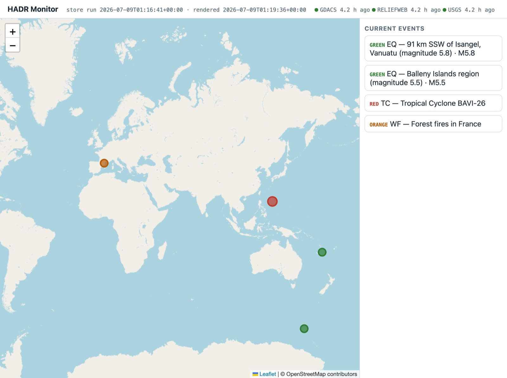
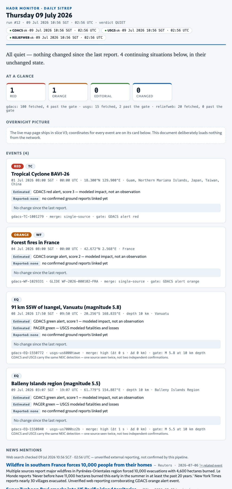

HADR Monitor
Disaster information on day zero is fragmented, noisy, and constantly revised. Three feeds each tell a partial story at a different speed, and none of them is a morning briefing. HADR Monitor is an unattended agent that does the reading for you — merging the feeds into single events, filtering the noise, and telling you plainly what needs attention today.
GDACS, USGS and ReliefWeb each report at a different latency — raw physics in minutes, modeled impact in hours, human confirmation in days. To know what actually happened overnight you have to read all three, mentally deduplicate them, and remember what you already knew yesterday. It is a chore that has to happen at the same time every morning, whether or not anything occurred.
HADR Monitor turns that chore into two things you can trust: a live dashboard that always reflects the latest fetch with its freshness on display, and a once-a-day report that summarises the previous day, separates estimates from confirmed facts, and states explicitly what changed — including when the honest answer is "nothing".
Lay reader
Read the top of the report and understand, in ordinary words, what happened in the world overnight — without knowing what GDACS is or what an "alert level" means.
Humanitarian analyst
Below the summary: events ranked by severity with sources, alert levels, estimated-vs-reported impact labels, merge confidence, and links to the raw records — enough to act on or verify.
Leadership
Glance at the map or the summary and know whether anything needs attention today. A quiet report means the pipeline ran and found nothing — not that it broke.
One pipeline, two cadences — deterministic first, generative second. A plain Python pipeline decides whether anything changed; the model wakes up only when it did, and its only job is to assess and write.
The one rule: the model never decides whether to wake up. A deterministic script does. Fetching, deduplication and change detection give the same answer twice — so they never live in a prompt.
An interactive map plus the current event list, markers coloured by alert level, click through for detail. It is redeployed whenever the underlying data changes, and always shows the last-fetch time for each feed — so you can see at a glance how fresh it is.

Every marker is coloured by alert level; the header stamps how long ago each feed was last fetched.

A self-contained HTML report — inline styles, no external requests, safe to mail. Plain-language summary first, then severity-ranked events with sources, every impact figure labelled Estimated or Reported, and a note on what changed since the last report.
Below what's shown here the report continues with corroborating news mentions, a quieter list of downgrades and withdrawals, and an explicit "what this report cannot see" — the blindness stated in full, every day.
Every report ends with an explicit "what this cannot see" — the blindness is part of the product, not a footnote.
| Feed | What it is | Character |
|---|---|---|
| GDACS | EU/UN multi-hazard alerts across all six hazard types | Colour-coded alert levels; fast, modeled impact |
| USGS | Real-time earthquake feed, regenerated every minute | Fast and raw; events get revised and occasionally deleted |
| ReliefWeb | UN OCHA's curated humanitarian record | Slow and human-verified: appears once people decide it matters |
A quiet report is a statement, not an absence. When HADR Monitor says "all quiet", it means the pipeline ran, fetched every feed, checked every threshold, and found nothing that cleared the bar — and it shows you the last-success time for each feed to prove it. Silence you can trust is the whole point.